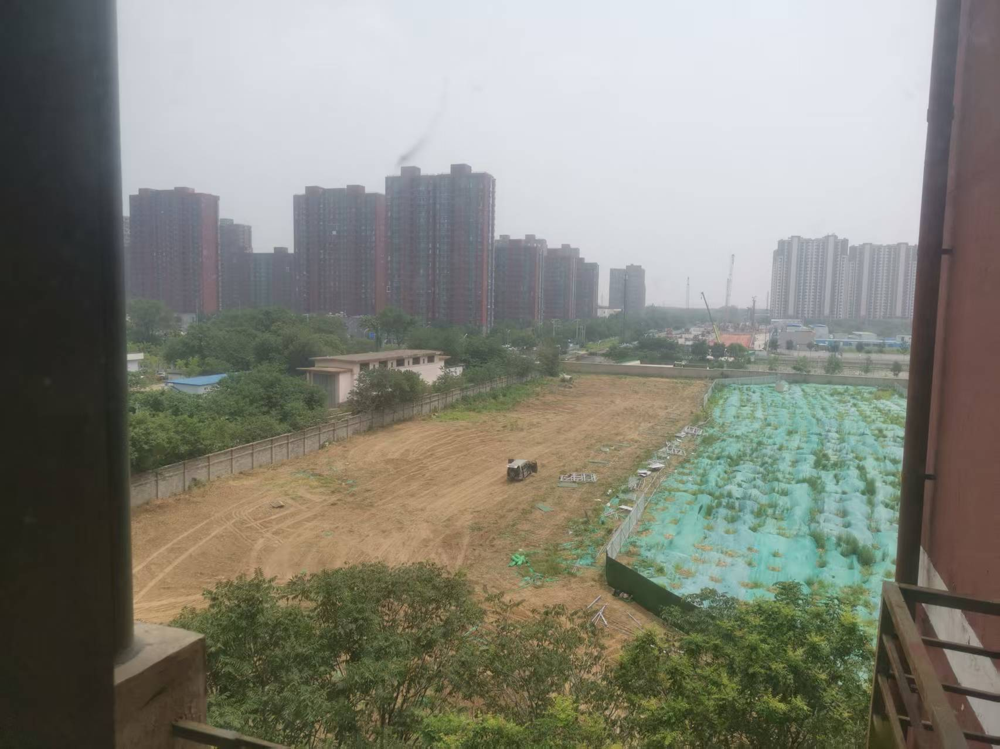

“禅”是佛教”禅那”的简称，梵语的音译。知道”禅”的人，觉得禅很简单，生活中处处有禅。不知道”禅”的人，觉得禅很难，觉得禅是一种神秘文化。
那么，究竟禅是什么？且听我一一道来。
因为最近找工作换工作，心里的事很多。昨晚准备睡觉，闭眼之后，脑子里的思绪纷飞，根本停不下来。所以我就索性睁开眼，屋里有夜灯，索性就盯着屋里的一个箱子看，就一直死死的盯着，渐渐的眼前的箱子很模糊(我是近视眼)，感觉箱子忽大忽小。我的眼睛也渐渐闭合了，就在这时，我感觉我的眼前出现了一片空白，脑子处在了一种晕的感觉，就是一个人站着往后倒，开始倒的那种晕一下的感觉，只不过我这里的感觉是一直持续的，我的内心也很平和，嘴角不自主的笑了起来。
再后面，我的心里突然升起了一个念头，就是心里突然想”这种感觉算不算初禅？我是不是进入初禅了？”也就是在这时，我眼睛睁开了，那种感觉消失了。
我想，这就是初禅。
我理解的修禅，就是在消除脑内的声音。我的大脑无时无刻不在有一种声音，比如：”肚子饿了，我现在好想吃饭啊…昨天点的那家外卖太难吃了…昨天的外卖员送餐太慢了…送餐的态度太差了，现在给他个差评去…我昨天下单的快递走到哪里…”。
我们每天脑子里这个声音从来没有断过，它会一直联想下去，永不停息。修禅和进入禅，就是消除脑内的声音，当没有这个声音的时候，也就进入了禅。
我昨晚为啥能进入，是因为我的脑内也一直有这个声音，但当我睁开眼睛死死盯着箱子的时候，我脑内所有的注意力都在箱子上，完全忽略了那个声音，也就是没有给那个声音注意力，所以它消失了。我体验到了禅。但当我心里升起念头的那时候，那个声音又回来了，又开始了无休止的联想”这种感觉算不算初禅？我是不是进入初禅了？”。

今天上午我的窗外有施工，叮叮当当敲击铁皮的声音很响，所以早上把我吵醒之后很烦躁。当我又用昨晚的方法后，再听到叮叮当当的声音，我只是感觉它就是一种声音，和鸟叫声没有任何区别，还有一种感觉就是声波穿过我的身体，我并没有起任何反应。也许这就是修禅后，会让一个人变得宁静的原因吧。